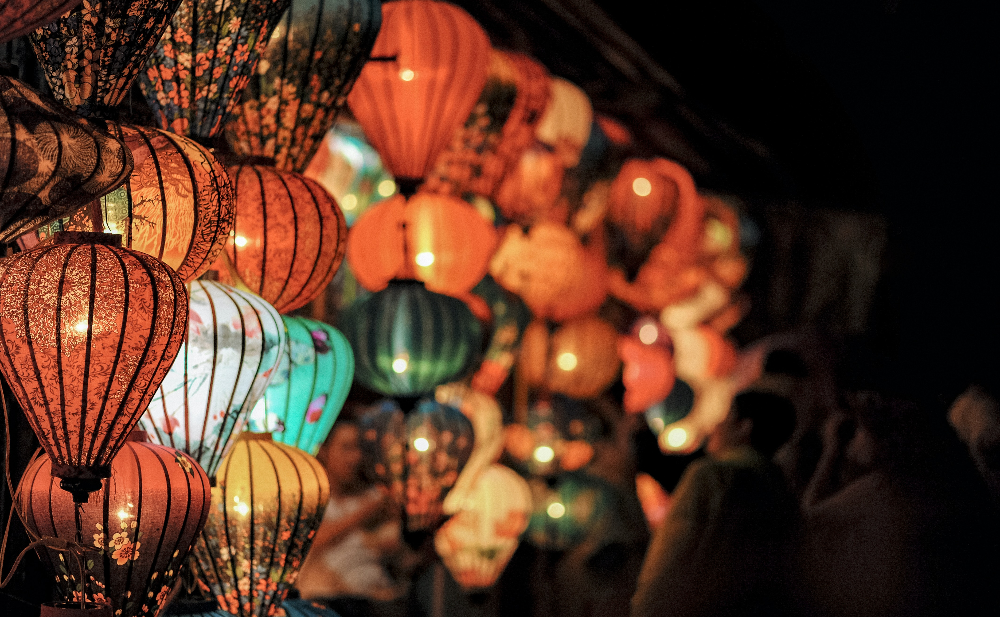

A popular event to watch during the festival is the dragon dance/parade. Groups of trained and/or untrained dancers perform with a dragon on sticks to ward off demons of the past year.

As the day yields to night, festival goers gather to release store-bought or handmade lanterns to the sky. In some countries sky lanterns are banned due to fire hazard; some people will have to settle for hanging lanterns instead.